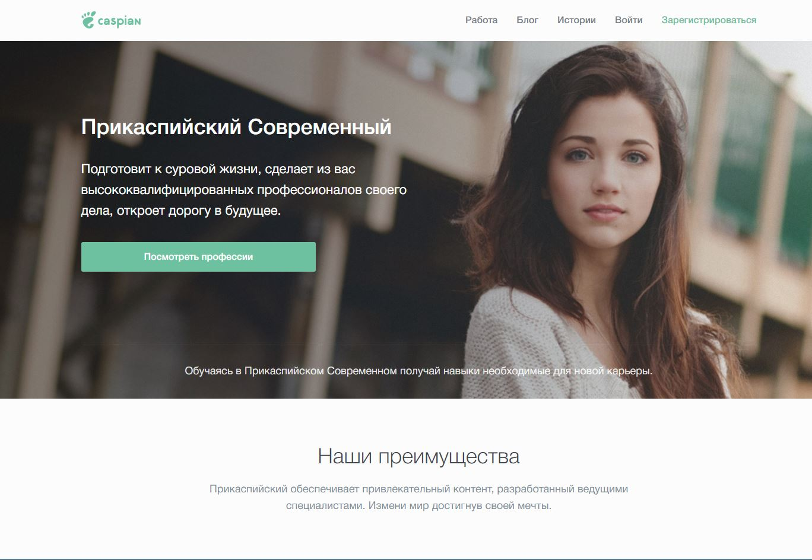

Встречайте, новый дизайн Прикаспийского сайта
от 29 января 2017 · 5 мин
Причины изменения дизайна
Я не открою ничего нового если скажу вам, что старый дизайн нашего колледжа немного устарел. Старый дизайн, медленный сайт, отсталые технологии катастрофически сказывается на впечатлении о колледже.
У прикаскийского СОВРЕМЕННОГО колледжа, НЕ СОВРЕМЕННЫЙ сайт.
 Старый дизайн ПСК
Старый дизайн ПСК
Основной проблемой старого дизайна является отсутствие целевой аудитории. Ну скажем я родитель ребёнка, передо мной встаёт выбор колледжа для своего отродья. Прогулявшись по просторам интернета, явных лидеров я не нашёл. Зайдя на официальный сайт ПСК, я был огорчён отсутствием структурированной информации. Не найдя никакой полезной информации, я принимаю выбор, что раз Прикаспийский Современный Колледж не может дать чёткую информацию, значит он также не сможет дать знания и опыт для моего ребёнка, следовательно, он нам не подходит и ухожу к конкурентам.
И это только один вариант развития событий из тысячи возможных
У ПСК есть странички в социальных сетях, которые разительно популярнее сайта. Но страничку может создать каждый! Страничка не передаст всех преимуществ колледжа, страничка не сможет заставит пользователя захотеть поступить в Прикаспийский Современный колледж, а новый дизайн сможет.
В большинстве случаев абитуриенты не знают куда они будут поступать. Новый дизайн сайта ПСК сможет ответить на все вопросы.
 Рай на Земле Прикаспийсого Современного близок
Рай на Земле Прикаспийсого Современного близок
Старый сайт ПСК был создан в 2008г. и с того момента не изменялся. Каждый год мы теряем потенциальных абитуриентов, по причине того, что они не знают всех преимуществ нашего колледжа. Если мы не решим эту проблему сейчас, в будущем она будет стремительно усугубляться.
— Актуальность проекта
Благоприятный исход
Если мы вместе возьмёмся за решение этой проблемы, то мы выйдем на новый уровень. Статистически мы будем одни из первых в Казахстане, в частности, в Атырау кто смог вывести дизайн и распространённый подход решения проблем на такой профессиональный уровень.
Новый дизайн необычайно глубок в своей эффективности и области применения. Но в тоже время, ужасно прост и абсолютно логичен. Он сможет сформировать доверие у пользователей, ВАУ эффект.
 Рай на Земле Прикаспийсого Современного близокВозможные проблемы
На реализации такого масштабного проекта будут появляются преграды, мы сможем их обойти и я объясню как.
#1 A/B тест
Перед премьерой нового дизайна следует провести исследования его эффективности по средствам A/B теста. К счастью в нашем колледже есть студенты, которые с радостью согласятся нам помочь. Это не займёт много времени, 2 минуты (не более). Всё, что от них будет требоваться это рассказать о ощущениях использования сайтом.
#2 Реорганизация кода
На этой стадии будет проводится удаление старого и упрощение нового кода. Для это потребуется компетентные люди в вопросах социальной-инженерии.